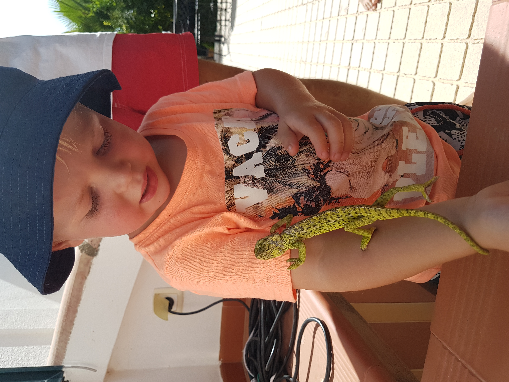
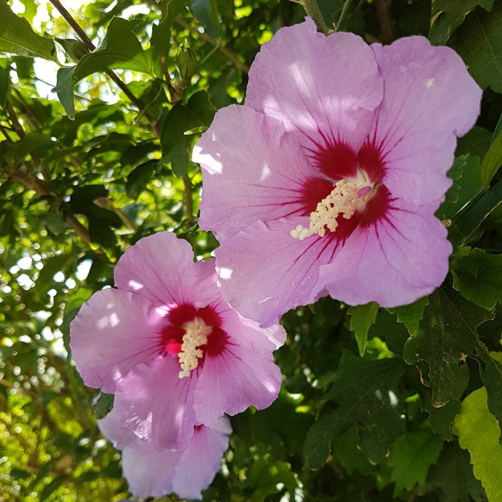
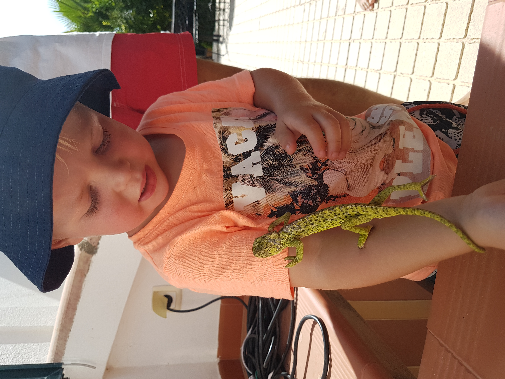
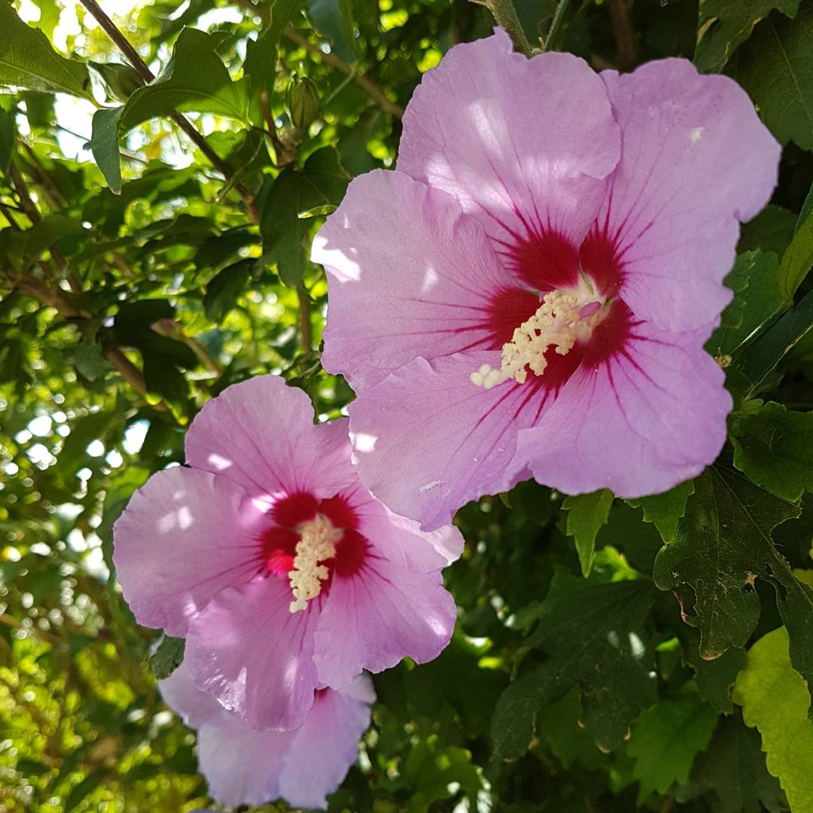

Places to visit
Tavira
Tavira is a little town located on the eastern side of the Argarve, 25 km west of the Spanish border.


Monte Gordo
Monte Gordo is very popular för tourists with the finest beaches.


Albufeira
In Albufeira you can visit fantastic beaches but also caves and high cliffs. Especially Ninho das Andorinhas is worth a visit.


Santa Luzia
Santa Luzia is a fishing village and at Praia do Barril beach you can take the small train out on the long beach. Here you also can see the "anchor cementery".


 


